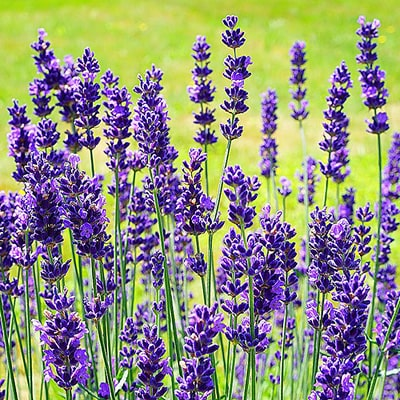
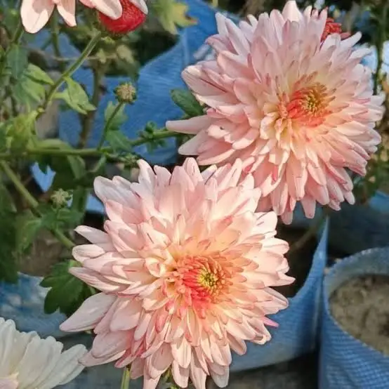
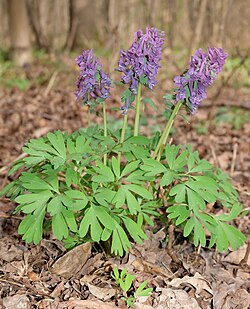

Лава́нда (Lavandula) — вічнозелений чагарник, який влітку квітне фіолетовими квітами. Рід рослин родини глухокропивових (Lamiaceae). Нараховує понад 40 видів, батьківщина яких Африка, Середземномор'я, Азія на захід до Індії.
Хризантема (Chrysanthemum) — рід рослин родини айстрових (Asteraceae). Нараховує понад 200 видів, які поширені в помірних і субтропічних районах Євразії та Північної Африки. Багато видів культивуються як декоративні рослини.
Хохлатка (Corydalis) — рід рослин родини макових (Papaveraceae). Нараховує понад 300 видів, які поширені в помірних і субтропічних районах Північної півкулі, особливо в Китаї та Гімалаях. Багато видів культивуються як декоративні рослини.